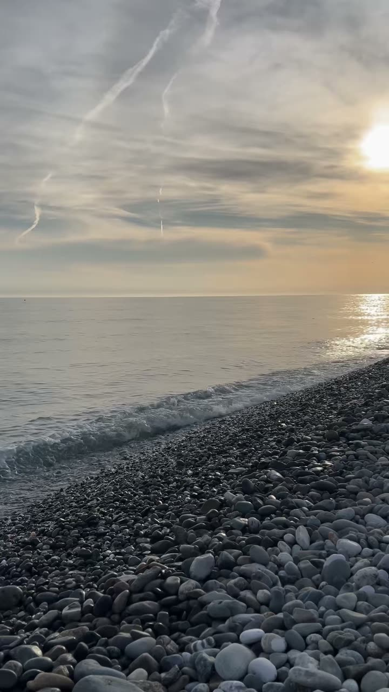

Plate IV · The Shore · by dayat evening
Ground yourself.
The 5-4-3-2-1 exercise: use your senses to come back to right now, one step at a time.
5 things you can see
Look around slowly. Name five things you can see, big or small.
Only on this screen. Never saved or sent, and cleared when you leave.
This was one Urge Walk tool. The app adds walks, your own reasons and check-ins.
Keep these tools on your phone